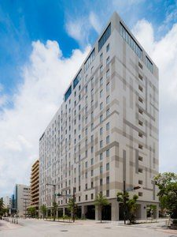
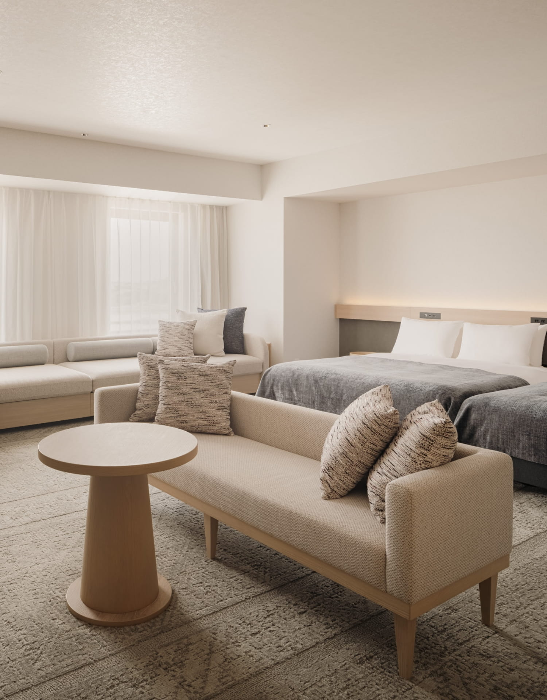
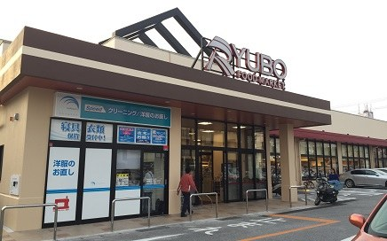
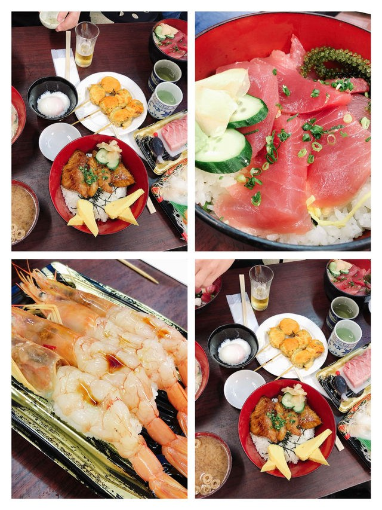

2025 全新開幕旗艦・全家 4 張獨立席夢思名床
地址：沖繩縣那霸市西 1-6-1｜Agoda 訂單編號：68796074｜3 晚總房費：33,572 円
交通位置：單軌電車「旭橋站」西口步行約 5~7 分鐘，全段平坦無階梯障礙，推大行李超省力！

🏨 NEST NAHA 時尚大氣外觀

🛏️ 4 張席夢思大床（群祐享獨立床）

🏊 14F 溫水無邊際泳池（唯唯最愛）
舒適四人房・4 張獨立名床
Simmons 席夢思頂級床墊・100% 獨立不互擾
絕非一般加床或沙發床！群祐（12歲）享有自己的標準獨立大床，夜晚翻身打滾零干擾；唯唯 Mia（7歲）與媽媽、爸爸各睡一張，全家連續 3 晚深度好眠充電。
乾濕分離衛浴＋獨立大型浴缸，每晚泡熱水澡放鬆雙腿
每層皆有自動販賣機、投幣式洗烘衣機，隨洗隨穿免帶厚重行李
14F 頂樓溫水無邊際泳池 ＆ Happy Hour
唯唯最愛水上時光・俯瞰那霸港海景
12 月恆溫加熱溫水開放！唯唯與哥哥在透明池畔戲水，爸爸媽媽在躺椅享受夕陽海風。傍晚 17:00~19:00 頂樓 Lounge 房客專屬 Happy Hour，免費特調飲品與小點心。
備有完善淋浴設施、防滑地墊與毛巾租借
2F 晨光森林早餐：現烤可頌、阿古豬香腸與現打果汁
飯店周邊「走路就到」美食與生活圈（實測步行時間）
步行 3~7 分鐘
西町りうぼう超市（Ryubo Nishimachi）
步行 6 分鐘

直行 450 公尺，營業至午夜 24:00！ 晚上 20:00 後熟食區全面半額折扣，採買沖繩香檬果汁、明治特濃牛奶、日清泡麵、山崎草莓蛋糕與宵夜生魚片的寶庫。
傑克牛排館（Jack's Steak House）
步行 3 分鐘

僅 250 公尺！ 沖繩 1953 年創始美軍復古牛排，特選沙朗牛排淋上 No.1 專用牛排醬，搭配濃郁玉米濃湯與香酥圓麵包，群祐與爸爸肉食首選！
oHacorté Bakery 泉崎店（2025新址）
步行 6~7 分鐘

2025/10/6 盛大回歸泉崎 1-4-10！ 沖繩最具名氣的法式水果塔與自家酵母麵包，酥脆塔皮搭配多汁草莓與白葡萄，唯唯 Mia 與媽媽夢幻下午茶。
龜かめそば（Kame Kame Soba）
步行 4 分鐘

那霸隱藏版沖繩排骨麵！ 滿滿一大碗燉煮透爛的軟骨肉，大骨甘甜湯頭，滿桌新鮮艾草免費自取加入。★核實注意：週六正常營業，週日固定公休。
目前章節：🏨 巢飯店特色
2026/12/17 (週四) 第一天
行程主軸：搭乘台灣虎航夕陽航班，專車計程車極速抵達巢飯店，安頓四張大床，漫步西町超市採買首晚宵夜。
15:00
高雄小港機場 (KHH) 集合報到與托運行李
小港國際航廈 3F
全家於高雄小港機場 3F 台灣虎航櫃台辦理登機。爸爸出示預先登錄好的 Visit Japan Web (VJW) 入境 QR Code，群祐與唯唯領取實體登機證，開心拍照留念。托運 4 人行李，通過安檢與海關。
17:30 - 19:55
台灣虎航 IT728 翱翔天際 ➔ 抵達那霸機場 (OKA)
航程 1 小時 25 分

飛航平穩，在機上看著夕陽漸漸沉入太平洋。唯唯 Mia 與哥哥吃點小餅乾，很快就抵達沖繩那霸機場國際線航廈。
通關實測：出機艙後沿著入境指引走，準備好 VJW 入境審查與海關申報 QR Code，通常 25~35 分鐘內即可順利提領行李出關。
20:45 - 21:05
機場直送 NEST NAHA（計程車極速無痛移動）
省力秘技
晚間抵達沖繩，強烈建議全家直接在航廈外計程車站搭乘計程車！不用讓唯唯和群祐拖著行李爬樓梯搭單軌，車程僅 10~12 分鐘，車資約 1,500~1,800 円，司機直接將行李搬到 THE NEST NAHA 飯店門口。
21:10 - 21:40
NEST NAHA 辦理入住 ＆ 安頓 4 張大床
Agoda 訂單：68796074
在時尚挑高的 1F 大廳辦理入住，領取 4 張房卡與頂樓泳池識別手環。進房後將行李箱攤平在寬敞走道上，讓群祐與唯唯選好自己喜歡的床位，脫掉厚外套換上輕鬆便服。
21:50 - 22:45
西町散步 ＆ 西町りうぼう超市採買第一晚宵夜
走路 6 分鐘

沿著西町平坦的大馬路散步 450 公尺即抵達超市。此時正值「半額（50% OFF）」貼標高潮！
- 群祐：特選半額炙燒鮭魚壽司、日清 UFO 炒麵
- 唯唯 Mia：山崎草莓蛋糕切片、明治牛乳布丁
- 爸爸媽媽：Orion 生啤酒、沖繩香檬氣泡水、現切蜜瓜
採買完回房洗個舒服的熱水澡，舒暢入睡，迎接明天精彩的 PARCO CITY！
2026/12/18 (週五) 第二天
行程主軸：全沖繩最大海景購物殿堂！群祐戰鬥陀螺 X 旗艦專區、唯唯三麗鷗與吉卜力、媽媽免稅血拚、2F 海景美食廣場。
08:30 - 09:30
飯店晨光時光 ＆ 活力出發準備
不急不催・自然醒
在席夢思名床上睡到自然醒。在房間享用前晚採買的鮮奶與可頌麵包，或品嘗 2F 現做早餐。備好空的後背包，全家著輕便鞋，準備迎接全日逛街。
09:45 - 10:15
NEST NAHA 直達浦添 PARCO CITY（計程車直送）
車程 20 分鐘
飯店大廳請櫃台叫車或門口搭車，走國道 58 號直達 PARCO CITY 大門。4 人包車約 2,500~2,800 円，車內冷氣舒適直達，避開轉乘巴士站牌吹風的不便。
10:30 - 12:30
上半場：動漫遊戲天堂 ＆ 可愛周邊狂歡
3F 娛樂專區

群祐專屬必逛：
3F namco 與駿河屋、玩具反斗城 Toys"R"Us：擁有最完整的「戰鬥陀螺 X（Beyblade X）」發射器、限定軸心、對戰盤，價格約為台灣 65 折！還可體驗最新機台與寶可夢卡牌對戰。
唯唯 Mia 專屬必逛：
3F Sanrio 三麗鷗專賣店 ＆ 橡子共和國（吉卜力）：Hello Kitty、酷洛米、美樂蒂玩偶與盲盒，橡子共和國巨大龍貓巴士打卡拍照。
12:30 - 14:00
2F 無敵海景美食廣場（Food Hall）午餐盛宴
海景第一排

坐在整片大落地窗前一邊欣賞閃閃發光的東海海景，一邊享用午餐：
- 🔥 極味屋（極味や）：伊萬里黑毛和牛伊達漢堡排，在炙熱小鐵石上自己煎得滋滋作響，肉汁四溢！
- 🍜 博多一幸舍：濃郁正統豚骨泡沫拉麵，溏心蛋與叉燒深受群祐喜愛。
- 🍔 A&W 美式漢堡：沖繩限定沙士（Root Beer）搭配莫札瑞拉起司牛肉堡與捲捲薯條。
14:00 - 17:00
下半場：全家免稅服飾血拚 ＆ 海景甲板下午茶
免稅退稅服務處 1F
全沖繩最大的 Uniqlo、GU、3COINS、無印良品、ABC-MART 都在同層相鄰！媽媽與爸爸一次補齊冬裝、發熱衣與百元精緻生活雜貨，滿 5,000 円立即免稅 10%。逛累了到海景露台甲板吹風拍照，唯唯品嘗 Blue Seal 冰淇淋（紅芋＋雪鹽焦糖金楚糕雙球）。
17:30 - 20:30
滿載戰利品回飯店 ＆ 傑克牛排館大快朵頤
步行 3 分鐘回飯店
搭計程車直達 NEST NAHA 大廳，將大包小包戰利品放進房間。傍晚享受 14F Lounge 的 Happy Hour 休息放鬆，晚餐步行 3 分鐘至傑克牛排館（Jack's Steak House），點大份量沙朗牛排犒賞全家！
2026/12/19 (週六) 第三天
行程主軸：早晨漫步波上宮參拜踏浪，中午品嘗龜かめそば，下午落實 75 分鐘飯店午休與 14F 溫水無邊際泳池，傍晚進攻國際通！
09:30 - 11:45
波上宮（崖上神社參拜）＆ 波之上海灘踩沙
步行 10 分鐘即達
從 NEST NAHA 沿西町安靜的林蔭小巷散步 10 分鐘，即可登上建於珊瑚礁斷崖上的「琉球八社之首・波上宮」。參拜後走下階梯即達波之上海灘，冬日沖繩陽光溫和不刺眼，唯唯脫鞋踩在細軟白沙上玩貝殼，拍全家大合照！
12:00 - 13:00
午餐：龜かめそば（Kame Kame Soba）濃郁排骨麵
週六營業・核實準確
散步回飯店途中順路享用！老字號沖繩麵，大骨高湯長時間熬煮，排骨燉得軟嫩至極連軟骨都能直接融化在嘴裡。抓一把新鮮艾草撒入湯中，道地清香，群祐直呼比拉麵還過癮！
13:15 - 14:30
飯店黃金午休充電（★勝穩指定恪守需求）
充飽電不鬧彆扭
全家回 NEST NAHA 房間午睡放鬆 75 分鐘！ 孩子們在上午跑沙灘後體力消耗，在席夢思大床上安穩睡一覺，媽媽抬腿敷面膜，爸爸滑手機放鬆，下午滿血復活，傍晚逛街完全不喊累。
14:45 - 16:30
14F 頂樓溫水無邊際泳池戲水 ＆ Happy Hour
唯唯 Mia 最愛
睡醒後換上泳裝直上 14F！池水冬季溫水恆溫加熱，趴在無邊際池畔俯瞰那霸港口輪船與壯闊天空，唯唯玩水超級開心。泳池旁設有更衣與毛巾備品，回房沖澡神清氣爽。
17:00 - 21:00
核心必去：國際通（Kokusai Dori）熱鬧散步與夜市
購物美食大本營

旭橋站搭單軌或計程車 7 分鐘（800 円）至國際通起點：
- 🍟 Calbee+ 專賣店：點現炸溫熱的「Poteriko 沖繩紅芋薯條」，外酥內嫩甜香撲鼻，唯唯 Mia 搶著吃！
- 🐧 驚安殿堂唐吉訶德國際通店：24 小時營業整棟免稅，採買沖繩限定伴手禮、面膜與群祐的動漫周邊。
- 🍜 晚餐精選：暖暮拉麵（特濃芝麻香氣拉麵配半熟糖心蛋）或第一牧志公設市場現炒沖繩家常菜。
2026/12/20 (週日) 第四天
行程主軸：退房免費寄放行李，專車直達泊港魚市場大啖現剖黑鮪魚與焗烤海膽龍蝦，通堂拉麵午餐，國際通步行者天國採購，晚班機平安返抵高雄！
08:30
辦理退房（Check-out）＆ 行李全數寄存在 NEST NAHA
免費寄存
早上悠閒整理行李，至 1F 櫃台迅速辦妥退房手續。將 4 個大行李箱免費寄放於飯店櫃檯，領取行李取件牌，全家兩手空空、無拘無束輕裝出發！
09:00 - 11:30
核心必去地標：泊港魚市場（泊いゆまち Tomari Iyumachi）海鮮盛宴
計程車 7 分鐘直達


那霸最強漁港直送生鮮殿堂・全家美食全攻略：
- 🐟 現切黑鮪魚大腹（大トロ）：清晨漁船直送，粉嫩油花入口即化，一大盒只要 1,200~1,500 円，價格不到台灣的一半！
- 🦞 炙燒明太子焗烤龍蝦半隻：熱騰騰剛出爐只要 1,800 円，濃郁起司海膽醬汁香氣四溢，群祐愛不釋手。
- 🦪 現開超大生蠔 ＆ 生食級干貝串：滴上新鮮檸檬汁，極致鮮甜爆汁；唯唯與媽媽大啖特大熟甜蝦與玉子燒。
- 💡 貼心動線：市場內走道寬敞乾淨，設有公共立食與休息用餐區，洗手台與免洗餐具一應俱全。
11:45 - 13:45
午餐名店：琉球新麵 通堂 本店（小祿站）
沖繩超人氣名店
搭計程車直達通堂拉麵本店。招牌「男人麵」（濃厚豚骨黑蒜叉燒）濃郁厚實、「女人麵」（清澈甘甜雞白湯）爽口細膩。桌上無限量享用的特製辛子辣豆芽菜更是開胃極品，配上酥脆日式煎餃，全家吃得心滿意足！
14:00 - 18:00
核心必去：國際通步行者天國（週日限定・全街漫步無車干擾）
週日封路漫遊

每週日 12:00~18:00 國際通整條馬路完全禁止車輛通行，成為寬敞舒適的「步行者天國」！
- 🚶 漫步安心：唯唯與群祐在馬路中央自由拍照奔跑，完全沒有公車與汽車干擾。
- 🍦 鹽屋（宮古島雪鹽）：吃現擠海鹽霜淇淋，撒上柚子鹽、芥末鹽、可可鹽等多種風味鹽。
- 🎁 最後補貨：把御菓子御殿紅芋塔、石垣牛肉乾、南風堂雪鹽金楚糕一次買齊裝箱！
18:15 - 19:15
回飯店取行李 ➔ 計程車直達那霸機場 (OKA)
車程僅 12 分鐘
回到 NEST NAHA 領取行李，在大廳舒適沙發區重新打開行李箱，把今天在國際通與魚市場採買的伴手禮完美收納。18:45 由櫃檯協助叫大台計程車直奔機場國際線航廈，車資僅約 1,500 円，司機協助搬卸行李，毫無推拉負擔。
19:30 - 22:25
虎航 IT289 報到托運 ➔ 起飛凱旋抵達小港機場
圓滿落幕
19:30 - 20:30：國際線 3F 台灣虎航櫃台辦理登機與行李托運，順利通關出境。
20:30 - 21:00：在航廈 2F Sky Market 免稅店最後採購免稅伴手禮（ROYCE' 沖繩黑糖生巧克力）。
21:30：台灣虎航 IT289 準時後推起飛，全家在機上舒服休息補眠。
22:25：班機順利降落高雄小港機場 (KHH)，領取行李，全家滿載美好回憶與滿滿戰利品平安返家！
行前必備指南
提供最安心的旅行後盾，包含重要電話、天氣衣著、家庭成員個別偏好與各項費用預算。
家庭成員專屬偏好與照顧重點
👨 林勝穩（爸爸）
總指揮、證件保管、VJW 申報、計程車叫車與路線掌握，享受美食與悠閒放鬆。
👩 媽媽
購物策劃、服飾生活雜貨採買、甜點名店（oHacorté 水果塔）、全家拍照指導。
👦 群祐（12 歲兒子）
需要自己的獨立大床！熱愛戰鬥陀螺 X、動漫模型、電玩、牛肉漢堡與拉麵。
👧 唯唯 Mia（7 歲女兒）
最愛海灘玩沙、頂樓溫水泳池、三麗鷗與吉卜力周邊、草莓蛋糕、冰淇淋與現炸薯條。
日本緊急聯絡與辦事處電話
日本警察局報案專線
110
日本火警 / 救護車急救專線
119
12 月沖繩氣候與穿著建議
氣溫均值：18°C ~ 22°C，氣候涼爽宜人，類似台灣中南部秋季。
洋蔥式穿法：內穿短袖或薄長袖，外搭防風輕便外套。海邊風較大，可為孩子備薄圍巾或防風帽。
泳裝必備：記得攜帶泳衣、泳帽與泳鏡，供 14F 頂樓溫水無邊際泳池使用。
核心開銷預算參考表（4 人全家）
| 項目 |
預估金額 (円 / 台幣) |
備註說明 |
| THE NEST NAHA 住宿（3 晚） |
33,572 円（約 NT$ 7,150） |
4 張大床席夢思、已全額刷卡核實 |
| 全行程計程車交通費 |
約 8,500 円（約 NT$ 1,800） |
機場接送＋PARCO CITY＋泊港魚市場 |
| 全家餐飲美食預算 |
約 40,000 円（約 NT$ 8,500） |
傑克牛排、泊港海鮮、通堂拉麵、超市美食 |
| 購物伴手禮與玩具預備金 |
約 50,000 円起 |
戰鬥陀螺 X、三麗鷗、服飾、免稅伴手禮 |